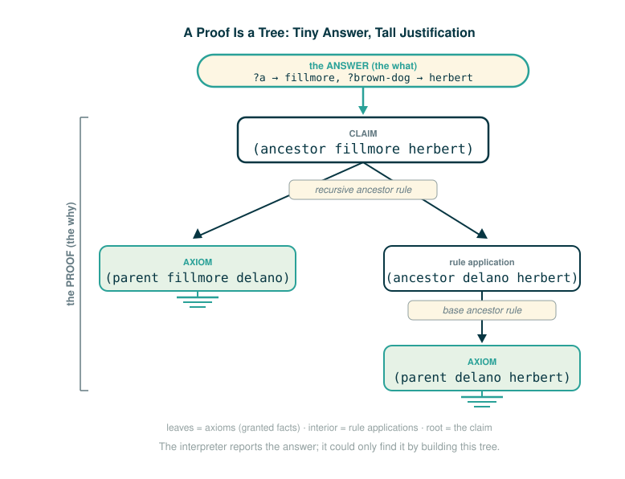

4.5.4 Proofs
By now you can run a query and read back the variable bindings it produces. This lesson reframes what is actually happening underneath. A query is not just a lookup. It is an assertion, and the interpreter's job is to prove it.
By the end you will be able to do four things: explain why each stated fact counts as an axiom, read the official common-ancestor query and say what it asserts, work out by hand why three different answers satisfy it, and distinguish a bare answer (the variable bindings) from a proof (the chain of facts and rules that justifies those bindings). That last distinction is the whole point of the lesson.
A Detective Building a Case
Think about how a detective argues that a suspect was at a scene. The detective does not just announce a conclusion. They build a chain: this receipt places the suspect in the building, the building's camera places them on the third floor, the third floor is where the safe is. Each link is something already accepted as established. The conclusion is only as good as the chain that supports it.
A logic query works the same way. When you ask the interpreter to find a common ancestor of two dogs, you are not asking it to look something up in a row. You are asking it to build a case: to assemble a chain of accepted facts and rules whose end is exactly the claim you made. The variable values it hands back are the names in the conclusion. The chain that got there is the proof.
Two pieces of vocabulary make this precise. The facts you typed in are the things the detective treats as already established. A fact the system accepts without justifying it from anything deeper is called an axiom. A rule is a license to manufacture new accepted statements from old ones. The interpreter proves a query by starting from axioms and applying rules until it reaches your claim.
The Logic Language as a Prover
The official text states the idea directly:
One way to think about the logic language is as a prover of assertions in a formal system. Each stated fact establishes an axiom in a formal system, and each query must be established by the query interpreter from these axioms. That is, each query asserts that there is some assignment to its variables such that all of its sub-expressions simultaneously follow from the facts of the system. The role of the query interpreter is to verify that this is so.
Here a "formal system" just means the collection of facts and rules you typed in — the axioms and rules below, together with the dog database. Nothing outside that database counts.
Unpack that one clause at a time, because every clause carries weight.
An axiom is a statement the system accepts as true without proving it from anything else. When you write a plain fact, you are handing the interpreter an axiom:
(fact (parent abraham clinton))There is nothing underneath this. The interpreter does not ask why Abraham is Clinton's parent. Inside this database, that is simply granted.
A rule is different in kind. A rule has a conclusion and one or more conditions, and it says the conclusion holds whenever the conditions do:
(fact (ancestor ?a ?y) (parent ?a ?y))Read this as: for any ?a and ?y, if ?a is the parent of ?y, then ?a is an ancestor of ?y. A rule does not assert a finished fact. It is a machine for producing new accepted statements from ones the system already has.
So a query "must be established from these axioms": the interpreter must reach your claim by starting from axioms and feeding facts through rules. And a query asserts that "all of its sub-expressions simultaneously follow" — every clause must hold at once, under one consistent assignment to the variables. We will see exactly why "simultaneously" matters when the same variable appears in two clauses.
A proof has a tree shape
Spelling out one chain of reasoning in plain sentences looks like this:
Claim: Fillmore is an ancestor of Herbert.
Because:
Fillmore is the parent of Delano. (an axiom)
Delano is the parent of Herbert. (an axiom)
The ancestor rule turns a chain of parent links into an ancestor link.
Therefore:
Fillmore is an ancestor of Herbert.The same proof has a tree shape, and drawing it that way makes the structure explicit:
(ancestor fillmore herbert)
|
applies rule: ancestor via parent + ancestor
/ \
(parent fillmore delano) (ancestor delano herbert)
| |
direct axiom applies rule: ancestor via parent
|
(parent delano herbert)
|
direct axiomThe leaves are axioms (direct facts). The interior nodes are conclusions justified by a rule. The root is the original claim. The interpreter performs exactly this kind of reasoning mechanically: it searches through facts and rules until it can justify the query, and the chain of justifications it finds is this tree.

Reading a Fact as an Axiom
When you look at a single fact, read it token by token and finish with what it commits the system to. A plain fact commits the system to one axiom.
(fact (parent abraham clinton))(fact (parent abraham clinton))
├─ fact ........... declares a statement the database will accept
├─ parent ......... the relation being asserted
├─ abraham ........ the first name in the relation
├─ clinton ........ the second name in the relation
└─ accepts axiom: inside this database, Abraham is the parent of ClintonA rule is read the same way, but the final row records that it produces a license rather than a finished axiom. The first inner list is the conclusion; the rest are the conditions.
(fact (ancestor ?a ?y) (parent ?a ?y))(fact (ancestor ?a ?y) (parent ?a ?y))
├─ fact ............. declares a statement the database will accept
├─ (ancestor ?a ?y) the conclusion this rule can justify
├─ (parent ?a ?y) ... the single condition that must hold first
└─ accepts rule: if ?a is parent of ?y, conclude ?a is ancestor of ?yThe two-condition ancestor rule is the recursive one. Its final row records that it chains a parent link to a shorter ancestor link.
(fact (ancestor ?a ?y) (parent ?a ?z) (ancestor ?z ?y))(fact (ancestor ?a ?y) (parent ?a ?z) (ancestor ?z ?y))
├─ fact ............. declares a statement the database will accept
├─ (ancestor ?a ?y) the conclusion this rule can justify
├─ (parent ?a ?z) ... condition one: ?a is the parent of some middle name ?z
├─ (ancestor ?z ?y) condition two: that ?z is itself an ancestor of ?y
└─ accepts rule: a parent link plus a shorter ancestor link makes a longer oneThe Official Dog Database
The proofs section works over the same dog genealogy used earlier on the page. The source reprints the full database here, so we reproduce it in full. It comes in three groups: parent axioms, the two ancestor rules, and the dog-color axioms.
(fact (parent abraham barack))
(fact (parent abraham clinton))
(fact (parent delano herbert))
(fact (parent fillmore abraham))
(fact (parent fillmore delano))
(fact (parent fillmore grover))
(fact (parent eisenhower fillmore))
(fact (ancestor ?a ?y) (parent ?a ?y))
(fact (ancestor ?a ?y) (parent ?a ?z) (ancestor ?z ?y))
(fact (dog (name abraham) (color white)))
(fact (dog (name barack) (color tan)))
(fact (dog (name clinton) (color white)))
(fact (dog (name delano) (color white)))
(fact (dog (name eisenhower) (color tan)))
(fact (dog (name fillmore) (color brown)))
(fact (dog (name grover) (color tan)))
(fact (dog (name herbert) (color brown)))Three groups, three jobs:
parent axioms: the direct family links
ancestor rules: how to extend parent links into ancestor links
dog axioms: the color recorded for each named dogTwo pieces of this database matter for the proof ahead, so pull them out now by reading the axioms directly.
brown dogs (color brown): fillmore, herbert
ancestors of clinton (via rules): abraham, fillmore, eisenhowerThe brown dogs come straight from two dog axioms. The ancestors of Clinton are not stated directly anywhere; they are produced by the ancestor rules. Abraham is Clinton's parent (one rule application). Fillmore is Abraham's parent, so Fillmore is an ancestor of Clinton through the recursive rule. Eisenhower is Fillmore's parent, extending the chain one link further. We will lean on both of these lists in a moment.
The Official Proof Query
With the database in place, the source poses a single question: is there a common ancestor of Clinton and a dog of a particular color? Before the official query, here is a smaller warm-up in the same shape so the structure is familiar.
A one-clause warm-up just asks for an ancestor of Clinton:
(query (ancestor ?a clinton))That asserts only that some ?a is an ancestor of Clinton. A two-clause bridge ties two requirements together with a shared variable:
(query (ancestor ?a clinton)
(ancestor ?a herbert))This asserts that some single ?a is an ancestor of Clinton and an ancestor of Herbert. The same ?a has to satisfy both lines, so it asks for a common ancestor of the two named dogs. The official query adds one more clause that pins down the second dog by color instead of by name.
Here is the official query exactly as the source gives it:
(query (ancestor ?a clinton)
(ancestor ?a ?brown-dog)
(dog (name ?brown-dog) (color brown)))A note on the surrounding text, stated plainly rather than smoothed over. The source's prose describes this example as finding "some common ancestor of Clinton and a tan dog" and says the interpreter reports "the name of that common ancestor and the tan dog." But the query code itself requires (color brown), and the supporting discussion afterward names brown dogs. The prose and the code disagree on the color word. The code is what the interpreter actually runs, so the worked result below follows the code: a brown dog. Treat the word "tan" in the source sentence as a slip; the query proves a brown-dog claim.
Read the official query one clause at a time, finishing each with what it requires.
(ancestor ?a clinton)(ancestor ?a clinton)
├─ ancestor ... the relation that must hold
├─ ?a ......... the variable to solve for
├─ clinton .... the fixed second name
└─ requires: ?a is some ancestor of Clinton(ancestor ?a ?brown-dog)(ancestor ?a ?brown-dog)
├─ ancestor ..... the relation that must hold
├─ ?a ........... the SAME ?a as in clause one
├─ ?brown-dog ... a variable for the second dog
└─ requires: that same ?a is an ancestor of some dog ?brown-dog(dog (name ?brown-dog) (color brown))(dog (name ?brown-dog) (color brown))
├─ dog ............... look up a dog record
├─ (name ?brown-dog) the SAME ?brown-dog as in clause two
├─ (color brown) .... that dog's recorded color must be brown
└─ requires: ?brown-dog is a dog whose color axiom says brownThe repeated variables are the glue that makes "simultaneously" meaningful:
?a must mean the same ancestor in clauses one and two
?brown-dog must mean the same dog in clauses two and threeIf the interpreter could choose a different ?a for each clause, the query would say almost nothing. Because ?a is shared, it forces one name to be an ancestor of Clinton and an ancestor of the brown dog at the same time. That single shared binding is what turns three independent-looking clauses into one joint claim.
Why Three Answers Appear
The source says the interpreter outputs Success! and reports an assignment whenever it can establish the assertion, and that for this query there are three such assignments. The exact wording: "The query interpreter only outputs Success! if it is able to establish that this assertion is true. As a byproduct, it informs us of the name of that common ancestor and the [brown] dog." The result is rendered by an interactive widget on the source page rather than printed as static text, so the three assignments are described, not listed verbatim, in the source. We can still work them out directly from the axioms, and doing so by hand is the best way to see why there are exactly three.
Start from the two lists we extracted from the database:
brown dogs: fillmore, herbert
ancestors of clinton: abraham, fillmore, eisenhowerNow apply the joint requirement. We need a name that is an ancestor of Clinton (so it must come from the second list) and is also an ancestor of one of the brown dogs (so it must be an ancestor of fillmore or of herbert). Check each candidate ancestor of Clinton against each brown dog.
candidate ?a brown-dog is ?a an ancestor of that brown-dog?
abraham fillmore no (fillmore is an ancestor of abraham, not the reverse)
abraham herbert no (abraham and herbert are on different branches)
fillmore fillmore no (nothing is its own ancestor here)
fillmore herbert YES (fillmore -> delano -> herbert)
eisenhower fillmore YES (eisenhower -> fillmore)
eisenhower herbert YES (eisenhower -> fillmore -> delano -> herbert)Three rows pass, which is exactly why the interpreter finds three assignments. Writing only the passing combinations:
?a = fillmore ?brown-dog = herbert
?a = eisenhower ?brown-dog = fillmore
?a = eisenhower ?brown-dog = herbertEach line is one way to make all three clauses true at once, so each is one successful proof route. (These three combinations are derived here from the axioms; the source page shows them through its interactive query widget rather than as a static block, so do not read this as a verbatim copy of printed output.)
A Step-by-Step Trace of One Proof
Take the first route, ?a = fillmore, ?brown-dog = herbert, and walk the interpreter's reasoning clause by clause. This is the chain that a full proof would record.
Goal: prove all three clauses with ?a = fillmore, ?brown-dog = herbert.
Clause 1: (ancestor fillmore clinton)
Apply the recursive ancestor rule with ?a = fillmore, ?y = clinton, ?z = abraham.
Condition (parent fillmore abraham) -> axiom. holds.
Condition (ancestor abraham clinton) -> apply the base ancestor rule:
Condition (parent abraham clinton) -> axiom. holds.
so (ancestor abraham clinton) holds.
so (ancestor fillmore clinton) holds.
Clause 2: (ancestor fillmore herbert)
Apply the recursive ancestor rule with ?a = fillmore, ?y = herbert, ?z = delano.
Condition (parent fillmore delano) -> axiom. holds.
Condition (ancestor delano herbert) -> apply the base ancestor rule:
Condition (parent delano herbert) -> axiom. holds.
so (ancestor delano herbert) holds.
so (ancestor fillmore herbert) holds.
Clause 3: (dog (name herbert) (color brown))
Match against the axiom (fact (dog (name herbert) (color brown))). holds.
All three clauses hold under one assignment -> Success!
Answer: ?a -> fillmore, ?brown-dog -> herbertNotice how many axioms had to participate even for this single answer: (parent fillmore abraham), (parent abraham clinton), (parent fillmore delano), (parent delano herbert), and the dog axiom for Herbert, plus two applications of each ancestor rule. The binding ?a -> fillmore is short. The justification behind it is not.
A Proof Is More Than an Answer
This is the heart of the lesson. The interpreter hands you back the bindings:
?a -> fillmore
?brown-dog -> herbertThose bindings are the answer. But the trace above is the proof, and it contains strictly more information.
answer: the variables and the values they took
proof: the chain of axioms and rule applications that makes those values validThe official text closes on exactly this point: "Each of the three assignments shown in the result is a trace of a larger proof that the query is true given the facts. A full proof would include all of the facts that were used, for instance including (parent abraham clinton) and (parent fillmore abraham)." Those two parent axioms are precisely the ones our trace needed to justify the Clinton side of the chain.
In practice the interpreter reports the answer. The proof is still there: search found the answer only by chaining axioms through rules, and that chain is recoverable. Holding onto this distinction is what lets you trust a result instead of merely receiving it. The answer tells you what is true; the proof tells you why.
⚠Common Beginner Traps
- Thinking the query asks for a single answer. It asserts that there is some assignment, and the interpreter reports every assignment its search can prove. Here that is three.
- Forgetting that a repeated variable across clauses must take one shared value. The whole force of the official query is that
?ais the same name in clauses one and two. - Confusing the answer with the proof. The bindings are the conclusion; the chain of axioms and rules is what justifies it.
- Reading
Success!as "every fact in the database is true." It means only that this particular assertion could be established from the axioms. - Reading the dog facts as Python objects. They are logic records written in the parenthesized logic language, not Python data structures.
- Trusting the source's word "tan" over the query code. The query requires
(color brown); the prose's "tan" is an inconsistency in the source, and the code is authoritative.
✓Check Your Understanding
- Run the one-clause query
(query (ancestor ?a grover))by hand against the official database. Which names does?atake, and in what order does the search reach them? - In the official query, why must the same
?asatisfy both ancestor clauses? - Which dogs are brown in the official database, and how do you know?
- Why does
?a = fillmore,?brown-dog = herbertsatisfy the query? Name two axioms the proof relies on. - What is the difference between the answer to a query and the proof of that query?
Show the answers
?atakesfillmoretheneisenhower. Grover's only parent axiom is(parent fillmore grover), so the base ancestor rule givesfillmorefirst; the recursive rule then climbs one link further tofillmore's parenteisenhower. There are no other ancestors of Grover, so the search reports exactly those two names.- Because
?ais a single variable with one binding across the whole query. The "simultaneously follow" requirement means one name must be an ancestor of Clinton and an ancestor of the brown dog at the same time, which is exactly what a common ancestor is. - Fillmore and Herbert. Their dog axioms are
(fact (dog (name fillmore) (color brown)))and(fact (dog (name herbert) (color brown))), the only two color axioms recording brown. - Fillmore is an ancestor of Clinton (via
(parent fillmore abraham)and(parent abraham clinton)through the ancestor rules), Fillmore is an ancestor of Herbert (via(parent fillmore delano)and(parent delano herbert)), and Herbert's record is brown. Two axioms it relies on are(parent abraham clinton)and(parent fillmore abraham). - The answer is the set of variable bindings the interpreter reports. The proof is the full chain of axioms and rule applications that establishes those bindings. The proof contains more information; the interpreter usually reports only the answer.
§Summary
The logic interpreter can be understood as a prover. Each plain fact is an axiom the system accepts without justification, and each rule is a license to derive new accepted statements from existing ones. A query is an assertion that some assignment to its variables makes all of its clauses follow from the axioms simultaneously, and shared variables force consistency across clauses. The official common-ancestor query has three satisfying assignments, which you can derive directly from the brown-dog axioms and the ancestor-of-Clinton derivations. Above all, an answer (the bindings) is not the same as a proof (the chain of axioms and rules behind them): the interpreter reports the former, but it could only find it by constructing the latter.
▶Step-Through Checkpoint
The logic language is not Python, but its proof search is concrete enough to model with ordinary Python so you can step through it. The block below stores the dog genealogy and colors, recovers each dog's ancestors by walking parent links, and then prints exactly the combinations that satisfy the official query: a common ancestor of Clinton and a brown dog. Stepping through it draws the environment diagram this Python model actually builds: the parents and colors dicts sit on the heap, each call to ancestors opens its own frame whose result list grows as current climbs the parent links, and the double loop's possible_a and possible_dog are the frame bindings that decide which pairs reach the print. Before you step through the block below, write down two predictions: the list of names that ancestors("clinton") returns, and how many (ancestor, dog) pairs the double loop will print.
# (1)
parents = {
"barack": "abraham",
"clinton": "abraham",
"herbert": "delano",
"abraham": "fillmore",
"delano": "fillmore",
"grover": "fillmore",
"fillmore": "eisenhower",
}
colors = {
"abraham": "white",
"barack": "tan",
"clinton": "white",
"delano": "white",
"eisenhower": "tan",
"fillmore": "brown",
"grover": "tan",
"herbert": "brown",
}
def ancestors(name):
result = []
current = name
while current in parents:
current = parents[current]
result.append(current)
return result
for possible_a in ancestors("clinton"):
for possible_dog, color in colors.items():
if color == "brown" and possible_a in ancestors(possible_dog):
print(possible_a, possible_dog)
Step through it and check your predictions: ancestors("clinton") returns ['abraham', 'fillmore', 'eisenhower'], and the loops print exactly three pairs — fillmore herbert, eisenhower fillmore, and eisenhower herbert. This is not the real logic interpreter, and it does not record a proof tree. It is a bridge: it reproduces the same three successful combinations with plain loops, so the joint requirement and the role of the shared ancestor are visible before you study the recursive proof search that produces them for real.